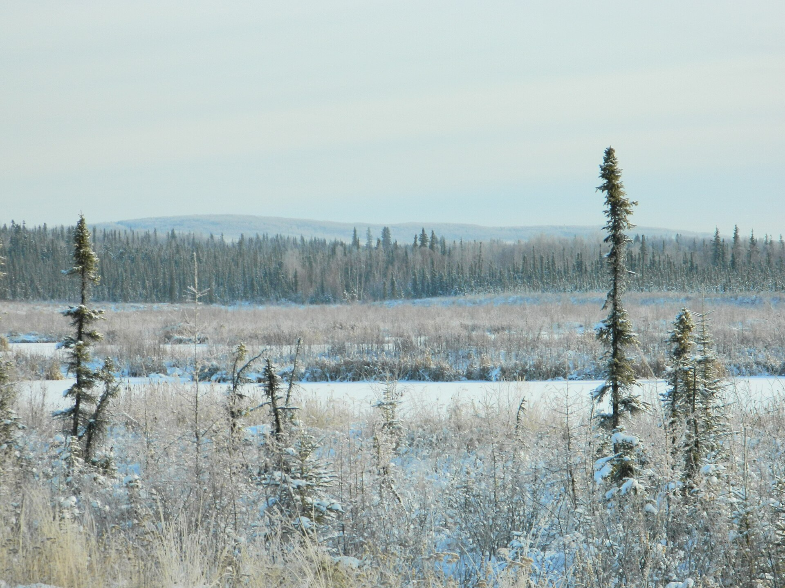
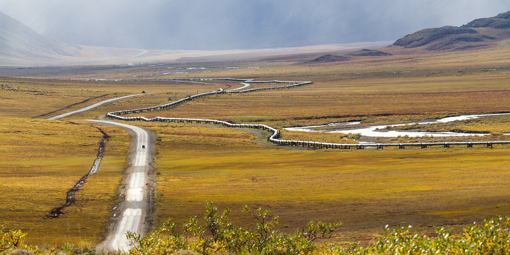

North Slope gas to the Interior — cheaper electricity, a stronger power grid, and lower heating costs for Alaskans.
A 484-mile, 14-inch in-state natural gas and NGL pipeline from Prudhoe Bay to Fairbanks. Privately financed. No state subsidy required.
Sponsored by Fairbanks Pipeline Company, Inc. · Fairbanks, Alaska
A right-sized, in-state pipeline bringing North Slope natural gas and propane to the Fairbanks / North Pole / Eielson load center. It attacks Interior energy cost on three fronts at once: electricity (moving power generation off naphtha and diesel), the grid (firming Interior generation and feeding the Northern Intertie), and heat (lower rates for gas customers, propane for off-grid homes).
Alaska produces gas at world scale. Interior Alaskans still pay some of the highest electricity and heating costs in the country — and burn diesel to keep the lights on. Arctic Fox closes that gap.
Interior Alaska sits 500 miles from one of North America's largest gas reserves, yet keeps the lights on by burning naphtha and diesel and heats homes with expensive fuel oil. The problem isn't just the heating bill — it's the electric bill and the grid behind it. Arctic Fox changes the fuel supply, not just the sticker price.

Thermal-equivalent comparison — the honest way to compare fuels is dollars per unit of usable heat (per MMBtu), because a gallon of diesel, a gallon of propane, and a thousand cubic feet of gas each carry different energy. Interior homes today burn #1 heating oil at ~$6.81/gal; Arctic Fox moves them onto piped gas and NGL propane at a fraction of that.
| Fuel (as used in the Interior) | Recent price | ≈ Thermal-equivalent | Source basis |
|---|---|---|---|
| Electricity — GVEA residential (all-in) | ~32.9¢/kWh | Fuel/COPA up to ~20.65¢/kWh (summer 2026) | GVEA / Alaska Beacon, 2026 |
| #1 heating oil / diesel fuel oil (what most off-grid Interior homes burn today) | ~$6.81/gal | ~$49/MMBtu | Alaska DCCED Fuel Price Report, Jan 2026 (Interior avg) |
| IGU piped / LNG-trucked gas (delivered) | ~$24.76/Mcf | ~$24/MMBtu | IGU Schedule C reference tariff |
| Arctic Fox delivered gas | ~$5.54/Mcf | ~$5.4/MMBtu | FPC screening cost of service (v12) |
| Arctic Fox propane (NGL stream — the fuel we move off-grid homes onto) | well below ~$3.85/gal | a fraction of $6.81/gal heating oil | FPC NGL stream vs. delivered-propane/heating-oil baseline |
Prices are recent Interior Alaska references, not spot quotes, and move with markets. The point isn't a single number — it's the structural gap: piped North Slope gas lands at a fraction of what trucked LNG and diesel fuel oil cost to deliver into the Fairbanks bowl.
The line is 14″ OD API 5L X-65 steel, Charpy-tested for Arctic low-temperature toughness. Technical terms and acronyms are defined on the Definitions tab.
Arctic Fox is deliberately not a large-diameter interstate line. It's a disciplined in-state system sized to real Interior demand — with room to grow as nominations come in.
Privately financed, cost-of-service priced, no state subsidy. The delivered rate is built transparently from transport plus commodity plus royalty. The project is budgeted to stay under $1 billion even in conservative scenarios, with a screening target of $683.1M — discipline and headroom built in, not optimistic precision.
The delivered number isn't a marketing figure — it's a cost-of-service build-up (transport + commodity + royalty) that a regulator can audit line by line.
484 miles along established highway corridors, then into the Interior load center at Fox.

Southcentral Alaska's gas basin can still keep homes warm and refrigerators running for years. What it can no longer do is fuel power generation at Railbelt scale. Arctic Fox fixes that from the north.
The Interior has the gas Cook Inlet lacks. The Railbelt intertie already connects them. Arctic Fox turns North Slope molecules into Railbelt electrons — north to south when it counts.
Sources: Alaska DNR/DOG 2018 & 2022 Cook Inlet reserves reports; ENSTAR Alaska Utilities Working Group Phase I (2023); ADN / Commonwealth North reporting 2023–2026; Alaska Energy Authority Alaska Intertie fact sheet. The ~$3.71/Mcf figure is the v12 workbook bundled rate at higher throughput (30 Bcf/yr); the ~$5.54/Mcf base case (19 Bcf/yr) is the Economics-tab delivered rate — both far below imported LNG.
Large commercial and industrial loads — data centers, AI/compute, mining, defense, and district energy — need power that is abundant, firm, and price-stable. Naphtha and diesel are none of those. Piped North Slope gas at Fox changes what's possible in the Interior.
Cold climate (free cooling), federal and university anchor tenants, existing fiber and highway corridors, and — with Arctic Fox — firm low-cost gas. The one missing input has been the fuel. This closes it.
Behind-the-meter and CHP configurations are open for discussion with prospective commercial and industrial off-takers. Generation sizing scales with committed load; the pipeline delivery point at Fox is designed to support it.
Energy and pipeline projects are dense with jargon. Here's what the terms and acronyms on this site actually mean.
Arctic Fox is running a Non-Binding Open Season through October 1, 2026. Submitting interest here is non-binding — it signals demand and unlocks the materials matched to your role. There's no obligation.
Utilities, boroughs, industrial and power buyers wanting firm gas ≥0.25 Bcf/yr.
Distributors and communities wanting propane and NGLs ≥10,000 gal/yr.
Debt and equity parties seeking the capital structure and offering materials.
Corridor, permitting, and partnership discussions along the route.
Serious offtakers, investors, and agencies receive the full package on request. Casual inquiries receive the plain-language brief.